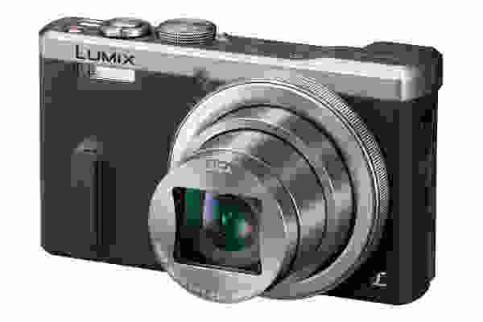

Welcome to Fotoaparatai
Fotoaparatai - Vienkartiniai fotoaparatai - FotoFoto
2020.10.29 06:22Į pradžią Naujienos Apie mus Paslaugos Kontaktai Servisas Prekių pristatymas Informacija pirkėjams Karjera LT | RU | EN Prekių krepšelis:
tuščias Fotoaparatai Veidrodiniai fotoaparatai (69) Canon (36)
Nikon (20)
Pentax (12)
Sony (1)
Kompaktiniai fotoaparatai (90) Canon (19)
Fujifilm (9)
Nikon (6)
Panasonic (16)
Ricoh (13)
Sigma (2)
Sony (25)
Sisteminiai fotoaparatai (243) Canon (31)
Fujifilm (71)
Hasselblad (7)
Nikon (26)
Olympus (7)
Panasonic (53)
Sigma (3)
Sony (45)
Momentiniai fotoaparatai (31) Fujifilm (25)
Lomography (2)
Polaroid (4)
Vienkartiniai fotoaparatai (17) Objektyvai ir aksesuarai Objektyvai veidrodiniams fotoaparatams (530) Makro objektyvai (39) Plačiakampiai objektyvai (53) Plačiakampiai fiksuoto židinio objektyvai (84) Standartiniai objektyvai (67) Standartiniai fiksuoto židinio objektyvai (74) Tele objektyvai (80) Tele fiksuoto židinio objektyvai (63) Selektyvaus fokuso objektyvai (16) Filmavimo objektyvai (VDSLR) (54) Filmavimo objektyvai (Cine) (38) Objektyvai vidutinio formato fotoaparatams (26) Objektyvai sisteminiams fotoaparatams (515) Makro objektyvai (30) Plačiakampiai objektyvai (29) Plačiakampiai fiksuoto židinio objektyvai (144) Standartiniai objektyvai (46) Standartiniai fiksuoto židinio objektyvai (98) Tele objektyvai (41) Tele fiksuoto židinio objektyvai (44) Filmavimo objektyvai (VDSL) (83) Optiniai adapteriai (51) Tele konverteriai (31) Makro konverteriai (0) Makro žiedai (6) Plataus kampo konverteriai (2) Perėjimo žiedai (12) Dangteliai objektyvams (55) Blendos (118) Fotografijos priedai Filtrai (438) Apsauginiai (72) Ultra-violetiniai (78) Skylight (12) Poliarizaciniai (73) Filtrų rinkiniai (14) Gradientiniai (0) ND filtrai (125) Close-Up filtrai (11) Specialių efektų filtrai (19) IR filtrai (10) Star filtrai (24) Stovai (387) Trikojai (200) Monokojai (23) Priedai stovams (164) Baterijos ir krovikliai (552) Akumuliatoriai (264) Baterijos (62) Baterijų įkrovikliai (124) Baterijų laikikliai (82) Nepertraukiamos srovės šaltiniai (20) Tinklo adapterių komplektai (4) Tinklo adapteriai (16) Kuprinės ir dėklai (606) Dėklai (161) Krepšiai (232) Kuprinės (147) Objektyvų dėklai (11) Diržai (34) Fotoaparatų laikikliai (21) Spausdinimo įranga (141) Spausdintuvai (34) Fotopopierius (107) Priežiūros priemonės (137) Valymo priemonės (104) Apsauginiai ekranai (33) Blykstės, Studijinis apšvietimas (1151) Blykstės (176) Blyksčių priedai (187) Šviesos sklaidytuvai (47) Kiti priedai (105) Fotostudijos įranga (788) Komplektai (12) Studijinės blykstės (49) Eksponometrai (1) Reflektoriai ir skėčiai (129) Lempos blykstėms ir priedai (244) Stovai ir priedai (50) Šviesdėžės (88) Makro fotografija (30) Generatoriai (0) Atminties laikmenos (157) CF kortelės (13) SD kortelės (54) MicroSD kortelės (22) Skaitymo įrenginiai (35) Atminties kaupikliai (1) USB atminties raktai (18) MS kortelės (0) XQD kortelės (14) Fotojuostos (175) Kiti fotografijos priedai (317) Nuotolinis valdymas (76) Adapteriai ir perėjimo žiedai (78) Fotojuostelių skeneriai (3) Kiti priedai (158) Programinė įranga (2) Duomenų saugojimo įrenginiai (16) Žiūronai ir kita optika Žiūronai (53) Monokliai (16) Lazeriniai tolimačiai (3) Fotoalbumai ir rėmeliai Fotoalbumai (144) Vestuviniai fotoalbumai (10) Vaikiški fotoalbumai (16) Tradiciniai fotoalbumai (67) Svečių knygos (2) Kiti fotoalbumai (49) Priedai fotoalbumams (6) Rėmeliai (91) Mediniai rėmeliai (32) Plastikiniai rėmeliai (32) Berėmiai Clip rėmeliai (2) Galeriniai rėmeliai (10) Metaliniai, stikliniai rėmeliai (5) Vaikiški rėmeliai (0) Skaitmeniniai rėmeliai (9) Kiti rėmeliai (1) Audio / Video ir kita Profesionali filmavimo technika (67) Vaizdo monitoriai (12) Vaizdo kameros (40) Priedai (1) Vaizdo perdavimo įranga (12) Kita įranga (2) Veiksmo kameros ir priedai (48) Mini DV kasetės (3) Optiniai adapteriai (2) Plataus kampo konverteriai (2) Tele konverteriai (0) Garso priedai (103) Video apšvietimas (140) Papildomi priedai (162) Kamerų rėmai (114) Motorizuoti stabilizatoriai (48) Vaizdo kameros (26) Ausinės (17) Dronai (18) Komisas Fotoaparatai (2) Canon (1)
N/A (1)
Objektyvai (1) Dėklai (2) Juostinės fotografijos priedai (2) Kita (10) Pradžia / Fotoaparatai / Vienkartiniai fotoaparatai
Vienkartiniai fotoaparatai
Vaizdavimas:
✓ Vienkartinis fotoaparatas Agfa LeBox 400 27 Outdoor 7.5 €
Plačiau ✓ Vienkartinis fotoaparatas Agfa LeBox 400 27 wedding flash 8.9 €
Plačiau ✓ Vienkartinis fotoaparatas Agfa LeBox 400 27 flash 8.9 €
Plačiau ✓ Vienkartinis fotoaparatas Agfa LeBox 400 27 Ocean 9.5 €
Plačiau ✓ Kodak vienkartinis fotoaparatas Daylight 39 Exp 9.5 €
Plačiau ✓ Ilford vienkartinis fotoaparatas HP5 plus 400/27 9.9 €
Plačiau ✓ Ilford vienkartinis fotoaparatas XP2 400/27 10.9 €
Plačiau ✓ Fujifilm vienkartinis fotoap. Quicksnap flash 400 10.95 €
Plačiau ✓ Kodak vienkartinis fotoaparatas FunSaver 27 12 €
Plačiau ✓ Kodak vienkartinis fotoaparatas FunSaver 27+12 13.9 €
Plačiau ✓ Kodak vienkartinis fotoaparatas Power Flash HD 27+12 13.9 €
Plačiau ✓ Kodak vienkartinis fotoaparatas Waterproof 27 (atsp. vandeniui) 14 €
Plačiau ✓ Fujifilm vienkartinis fotoap. Quicksnap flash 400 1x2 18.9 €
Plačiau ✓ Fujifilm vienkartinis fotoap. Quicksnap Marine 800 ISO 27 nuotr. 18.9 €
Plačiau ✓ Lomography vienk.fotoap. 400/36 Color 21.9 €
Plačiau ✓ Lomography vienkartinis fotoaparatas 400/27 Metropolis 24.9 €
Plačiau ✓ Harman 35mm daugartinis fotoaparatas + 2x PAN 400 juostelės 29 €
Plačiau Produkcija
Fotoaparatai Objektyvai ir aksesuarai Fotografijos priedai Žiūronai ir kita optika Fotoalbumai ir rėmeliai Audio / Video ir kita Komisas Naudinga informacija
Apie mus Naujienos Kontaktai Fotopaslaugos Išpardavimai Dovanų kuponai Slapukų naudojimas Naujienlaiškis
Užsiprenumeruoktie mūsų naujienlaiškį ir sužinokite pirmieji apie naujausias akcijas, produktus, bei išpardavimus
Ačiū! Jūs sėkmingai užsisakėte naujienlaiškį
Susisiekite su mumisVilniuje: 8 5 2394130
Kaune: 8 37 711296
Servisas: 8 5 2394118
vilnius@fotofoto.lt
Taip pat mus rasite
© UAB "Fotoprekyba". Visos teises saugomos.
